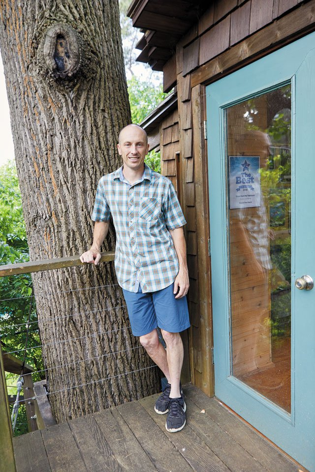
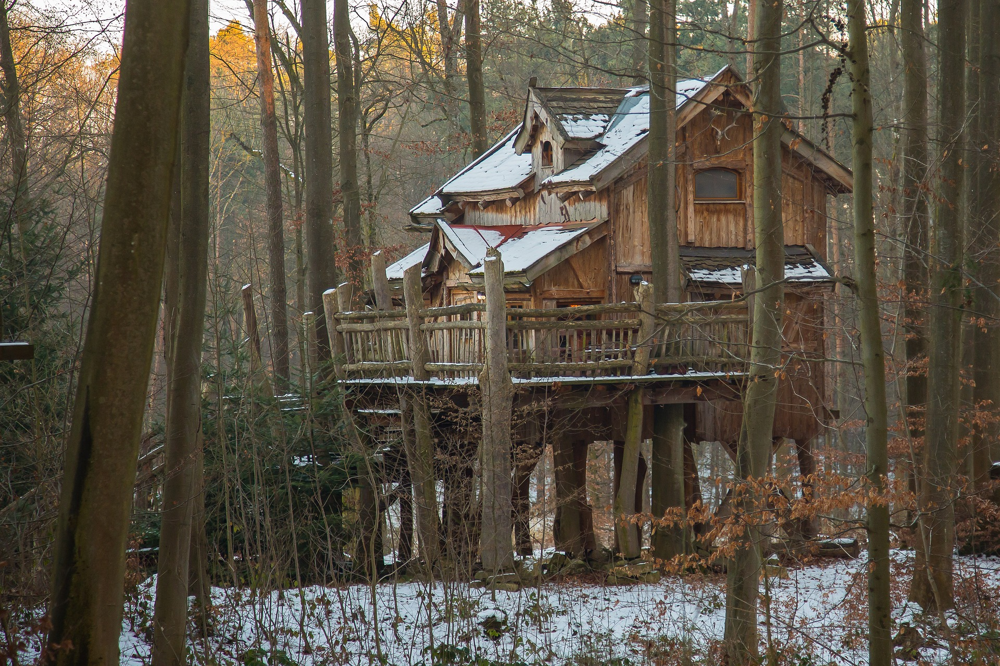

At TreeHousePro, we specialise in bringing your treehouse dreams to life. Run by Sam, a skilled and passionate professional treehouse builder, we create everything from rustic backyard forts to luxurious treetop cabins designed for year-round living. We believe a treehouse is more than just a structure - it’s a gateway to imagination, adventure, and connection with nature. Every treehouse we build is tailored to your needs, crafted with precision, creativity, and a deep respect for the trees that make it possible. Whether you’re dreaming of a cozy hideaway for your kids, a fantasy escape, or a stunning grown-up retreat, TreeHousePro is here to make it happen. From small backyard builds to fully consented residential treehouses, we handle every detail to ensure your new treetop sanctuary is as safe, functional, and magical as it is beautiful. Let us help you start building your dream treehouse today!
At TreeHousePro, we make your treehouse dreams a reality by working closely with you every step of the way. Here’s how we do it:

Sam's favorite treehouse build was a small, rustic and cozy build in the mountains of Queenstown. The project was an amazing small treehouse with a deck, 2 stories, and a kitchen & bathroom.
He also really liked the clients, who took the crew out on their boat for a day, bought them pizza, etc… - “absolutely NOT saying that you have to do that, but, you know, it’d be nice!”